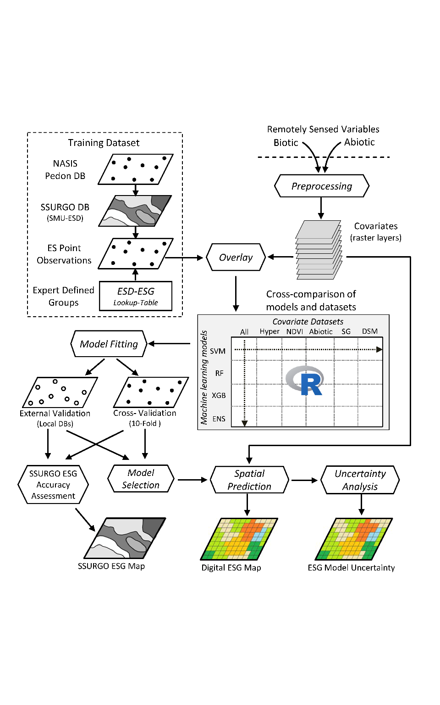

Last updated: 2019-06-17
Checks: 5 1
Knit directory: ESG.Mapping/
This reproducible R Markdown analysis was created with workflowr (version 1.3.0). The Checks tab describes the reproducibility checks that were applied when the results were created. The Past versions tab lists the development history.
The R Markdown file has unstaged changes. To know which version of the R Markdown file created these results, you’ll want to first commit it to the Git repo. If you’re still working on the analysis, you can ignore this warning. When you’re finished, you can run wflow_publish to commit the R Markdown file and build the HTML.
Great job! The global environment was empty. Objects defined in the global environment can affect the analysis in your R Markdown file in unknown ways. For reproduciblity it’s best to always run the code in an empty environment.
The command set.seed(20190528) was run prior to running the code in the R Markdown file. Setting a seed ensures that any results that rely on randomness, e.g. subsampling or permutations, are reproducible.
Great job! Recording the operating system, R version, and package versions is critical for reproducibility.
Nice! There were no cached chunks for this analysis, so you can be confident that you successfully produced the results during this run.
Great! You are using Git for version control. Tracking code development and connecting the code version to the results is critical for reproducibility. The version displayed above was the version of the Git repository at the time these results were generated.
Note that you need to be careful to ensure that all relevant files for the analysis have been committed to Git prior to generating the results (you can use wflow_publish or wflow_git_commit). workflowr only checks the R Markdown file, but you know if there are other scripts or data files that it depends on. Below is the status of the Git repository when the results were generated:
Ignored files:
Ignored: .Rhistory
Ignored: .Rproj.user/
Ignored: data/raw_data/
Ignored: manuscript/figures/
Ignored: proj_setup/
Untracked files:
Untracked: data/derived_data/vector/
Unstaged changes:
Modified: analysis/ESG_Covariate_Processing.Rmd
Modified: analysis/ESG_MLR_Modeling.Rmd
Modified: analysis/ESG_SSURGO_mapping.Rmd
Modified: analysis/code.Rmd
Note that any generated files, e.g. HTML, png, CSS, etc., are not included in this status report because it is ok for generated content to have uncommitted changes.
These are the previous versions of the R Markdown and HTML files. If you’ve configured a remote Git repository (see ?wflow_git_remote), click on the hyperlinks in the table below to view them.
| File | Version | Author | Date | Message |
|---|---|---|---|---|
| html | b76c4f6 | jjmaynard | 2019-06-17 | Build site. |
| Rmd | 447f0f3 | jjmaynard | 2019-06-17 | Site update |
| html | 0919261 | jjmaynard | 2019-06-17 | Build site. |
| Rmd | f778b15 | jjmaynard | 2019-06-17 | Site update |
| html | e48cb8a | jjmaynard | 2019-06-17 | Build site. |
| html | a46f459 | jjmaynard | 2019-05-31 | Build site. |
| html | 0cf7a7e | jjmaynard | 2019-05-31 | Build site. |
| html | 39346bd | jjmaynard | 2019-05-30 | Build site. |
| html | a16932a | jjmaynard | 2019-05-29 | Build site. |
| html | 262b6e4 | jjmaynard | 2019-05-29 | Build site. |
| html | 4912c29 | jjmaynard | 2019-05-29 | Build site. |
| html | 997b636 | jjmaynard | 2019-05-29 | Build site. |
| html | f4cd0a9 | jjmaynard | 2019-05-29 | Build site. |
| html | b16b6e3 | jjmaynard | 2019-05-29 | Build site. |
| Rmd | 5c86b37 | jjmaynard | 2019-05-29 | Update file structure |
| html | 5c86b37 | jjmaynard | 2019-05-29 | Update file structure |
1. Develop an ESG point dataset for training and cross-validation
2. Preprocess ESG covariates for tiling and point overlay
3. Covariate feature selection and model development
4. Spatial predictions using tiled raster stacks
5. Model validation and uncertainty analysis 
| Version | Author | Date |
|---|---|---|
| b76c4f6 | jjmaynard | 2019-06-17 |
sessionInfo()R version 3.5.2 (2018-12-20)
Platform: x86_64-w64-mingw32/x64 (64-bit)
Running under: Windows 7 x64 (build 7601) Service Pack 1
Matrix products: default
locale:
[1] LC_COLLATE=English_United States.1252
[2] LC_CTYPE=English_United States.1252
[3] LC_MONETARY=English_United States.1252
[4] LC_NUMERIC=C
[5] LC_TIME=English_United States.1252
attached base packages:
[1] grid stats graphics grDevices utils datasets methods
[8] base
other attached packages:
[1] here_0.1 png_0.1-7
loaded via a namespace (and not attached):
[1] workflowr_1.3.0 Rcpp_1.0.1 digest_0.6.19
[4] rprojroot_1.3-2 backports_1.1.4 git2r_0.25.2.9000
[7] magrittr_1.5 evaluate_0.13 stringi_1.4.3
[10] fs_1.2.7 whisker_0.3-2 rmarkdown_1.12
[13] tools_3.5.2 stringr_1.4.0 glue_1.3.1
[16] xfun_0.6 yaml_2.2.0 compiler_3.5.2
[19] htmltools_0.3.6 knitr_1.23